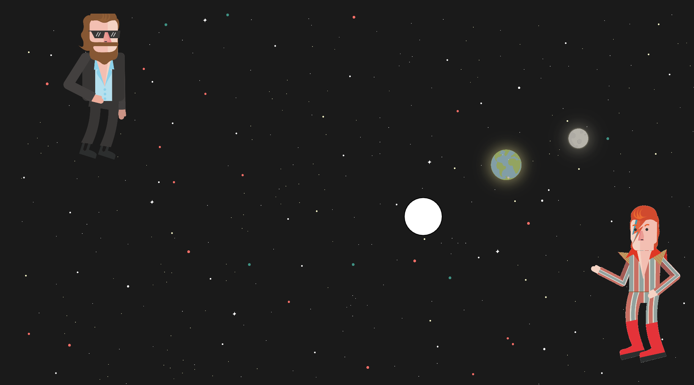
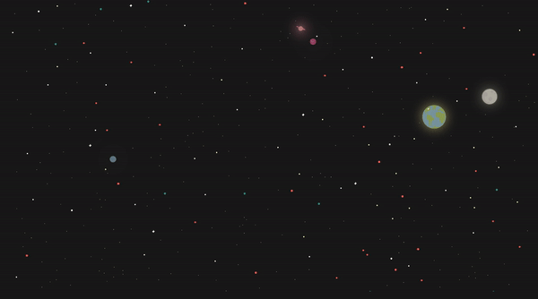
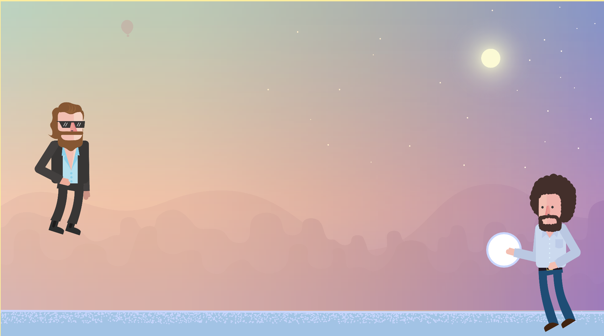
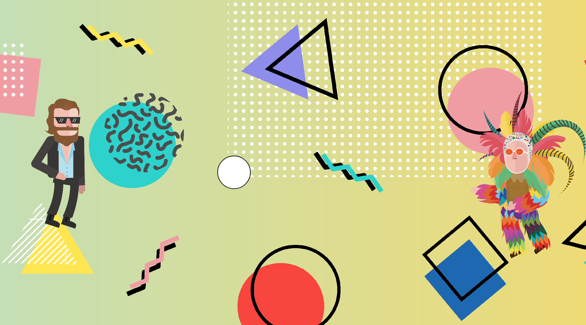

 




Tina, Kat, & Junyang
So far we have created three themes:
~(All graphics created with Adobe Illustrator)~
There's also a John Lennon waiting to be utilized somewhere...

We have also created a number of player characters:

The default characters in each game will shoot objects for the player's character to either capture or avoid. Default characters' movement is generated with Perlin noise, and new items are fired whenever what's previously shot moves off canvas.